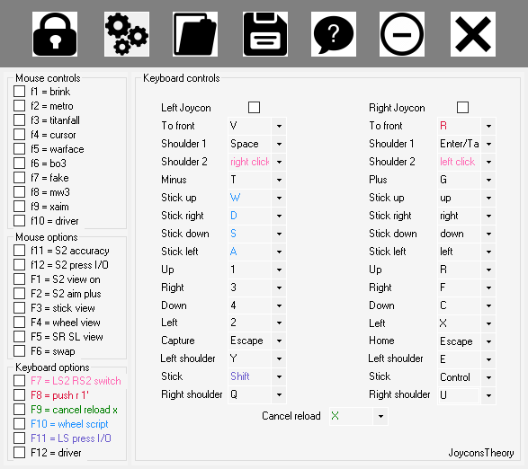

Game Ready Joycons Support
The program is based on a concept of adaptative settings required for playing all games in a simple interface. It asked to test a lot of games in order to have all settings required for minimum changement in the interface. Let's see...


Considerations About the Program
The program show a help where you have everything to know for be able to play your games using Joycons. You can download the sdk and program in release folder.